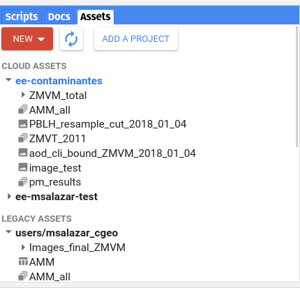

Bienvenidos
Este blog lo utilizaremos como plataforma para poder hacer un curso de Google Earth Engine y este es el primer post de dicho blog.
Introducción
Google earth engine (GEE) es una servicio de procesamiento geoespacial en linea el cual tiene la capacidad de hacer procesamientos a gran escala. Esto nos ayuda a procesar grandes cantidades de datos geoespaciales (que muchos se encuentran dentro de GEE).
GEE nos permite usar catalogos públicos de imágenes satelitales y generar servicios interactivos (mapas).
GEE esta pensado para su uso usando el sitio https://code.earthengine.google.com/, para poder hacer uso del mismo es necesario darse de alta en el servicio a traves de una cuente de Google.
Entendiendo GEE
Vamos a utilizar como principal herramienta el editor de código de GEE.

Dentro de esta consola se tiene las siguientes partes
- Code Editor: dentro de esta area se desarrolla el código en GEE usando JavaScript

- Console: Muestra la salidas que se piden dentro del código ejecutado. Si hay errores en el código ejecutado en esta sección se mostrarán los mensajes de error corespondientes.
- Inspector: En esta parte se pueden inspeccionar los elementops dentro de los mapas generados.

- Task: El manejador de tareas nos sirve para monitoriar las distintas tareas solicitadas dentro de GEE como puede ser la descarga o subida de imágenes.
- Scripts Esta parte funciona como un navegador de archivos para los scripts propios y otros a los cuales se tiene acceso como pueden ser los compartidos por otros usuarios.

Docs: Aquí podemos encontrar muchos ejemplos distintos de como se utiliza GEE, lo cuales son compartidos por los desarrolladores de la plataforma.

Assets: En esta sección se encuentran objetos que fueron subidos por el usuario para ayudar en la generación de mapas. Los distintos objetos pueden ser imágenes rasters u objetos geométricos lo cualess pueden estar dentro de un archivo ‘.shp’. 
Entendiendo un poco más
El lenguaje de uso nativo de GEE es JavaScript, aunque se ha desarrollado una API (Application Programming Interface) para python esta también hace uso de scripts escritos en JavaScript. Vamos a explicar los básicos en JavaScript y a partir de éstos se puede hacer una transición hacia códigos en Python de forma más sencilla.
Aunque se hace uso de JavaScript este no es un curso de JavaScript por tal motivo vamos a explicar las cosas necesarias para hacer cosas dentro de GEE.
Hola mundo
Como es regular en los lenguajes de programación vamos hacer un script para imprimir hola mundo.
Dentro de la sección de editor de código escribimos lo siguiente:
print('Hola Mundo')para hacer la ejecución de todo nuestro script se oprime el boton ‘Run’

En sección de la consola aparece la leyenda ‘Hola Mundo’. Lo primero que podemos observar es el uso de la función ‘print()’ nos permite imrpimir cadenas de caracteres. Esta función también nos permite imprimir distintos de estructuras de datos como son los metadatos de imágenes satelitáles o bien datos especificos como valores numéricos.
En JavaScripts en GEE tenemos distintos tipos de estructuras de datos como ‘Image’, ‘Feature’, ‘Dictionary’, ‘List’, ‘Array’, ‘Date’, ‘Number’ y ‘String’. En GEE las principales estructuras son ‘Image’ y ‘Feature’, la estructura ‘Image’ es la estructura en donde se almacenan las imagenes, la imágenes pueden tener distintas bandas, como son la mayoría de las imágenes raster satelitales. La estructura ‘Feature’ en GEE en el fondo es un GeoJSON, el cual es un objeto que debe de tener una propiedad ‘Geometry’, aunque esta puede ser ‘Null’, el uso común de la estructura ‘Feature’ nos sirve para asociar una propiedad a los objetos geométricos.
Ahora vamos a obtener cosas en un mapa, en el editor de código se escribe el siguiente script.
var paises = ee.FeatureCollection('USDOS/LSIB_SIMPLE/2017');
//print(paises)
var filtromexico = ee.Filter.eq('country_na', 'Mexico');
var paismexico = paises.filter(filtromexico)
//print(paismexico)
Map.addLayer(paismexico);
Map.centerObject(paismexico, 4);
//Map.setCenter(-99.221440, 19.291990, 4);GEE nos permite tener acceso a un extenso conjunto de datos en este caso vamos a utilizar la colección de datos ‘USDOS/LSIB_SIMPLE/2017’ la cual son los polígonos a gran escala de los paises de acuerdo al departamento de estado de EUA. ee.FeatureCollection es una estructura de datos que nos permite hacer el manejo de colecciones de ee.Features (‘Features’) de igual forma existe la estructura de datos ‘ee.ImageCollection’.
Lo primero que vemos dentro del código es la forma para declarar variables dentro de JavaScript este usa la palabra var para decir que lo siguiente sera una variable. En la variable paises se encuentra la colleccion de los políogonos de paises. Al ser una coleccion vamos a quedarnos sólo con el país Mexico. En la variable filtromexico contiene un filtro el cual filtrara usando el campo ‘country_na’ a los elementos que cuyo campo tengan la cadena ‘Mexico’.
En la variable paismexico tenemos el resultado de aplicar el filtro ‘filtromexico’ en la colección paises.
Las siguentes dos lineas en el código añaden al mapa el polígono que se encuentra en la variable paismexico y pone el mapa centrado en la variable con un zoom de 4.
En el código podemos observar la forma de evitar que se ejecuten ciertas lineas de código // nos sirve para hacer comentarios para poder explicar el código o bien para evitar que se ejecuten ciertas lineas. Esto es de particular relevancia cuando estamos experimentando o haciendo la limpieza del código.
Podemos ejecutar el código que acabamos de crear presionando el boton ‘run’, una vez ejecutado podemos ver en el mapa de México
Vamos a añadir algunas lineas más de código
var worldcountries = ee.FeatureCollection('USDOS/LSIB_SIMPLE/2017');
//print(worldcountries)
var filterCountry = ee.Filter.eq('country_na', 'Mexico');
//var filterCountry = ee.Filter.inList('country_na', ['Mexico', 'Guatemala']);
var country = worldcountries.filter(filterCountry);
Map.addLayer(country, {color: 'yellow'}, 'Paises');
Map.centerObject(country, 4);
var collection = ee.ImageCollection('COPERNICUS/S5P/OFFL/L3_NO2')
.select('NO2_column_number_density');
//print(collection.first())
/// FILTROS PARA SELECIONAR LAS IMAGENES QUE SE DESEAN
var filter19 = ee.Filter.date('2019-10-01', '2019-10-02');
var no2_19 = collection.filter(filter19).mean().multiply(1e6).clip(country);
//print('imagen 2019:', no2_19);
var vizParams = {
min: 0,
max: 200,
palette: ['black', 'purple', 'green', 'red']
};
Map.addLayer(no2_19, vizParams, 'no2_19');Otro de los objetos importantes dentro de GEE son las colecciones de imágenes, en una collección de se encuentran las imágenes en donde todas comparten ciertas propiedades comunes como son su sistema de referencia, el algoritmo con el que se hizo, etc.
Tomar la colección de imagenes completa en general no es necesario, por lo general o se selecciona una o se obtiene sus agregados dependiendo de la banda. Las imágenes satelitales en general contienen muchas bandas de los distintos sensores o imágenes generadas a través de algoritmos usando los datos de sensores satelitales. Como no es necesario hacer uso de todas las bandas, ni todas las imágenes es necesario tener la capacidad de seleccionar lo que consideremos de nuestro interes. En GEE existen objetos que nos ayudan a seleccionar, estos objetos son los filtros [ee.Filter] (https://developers.google.com/earth-engine/apidocs/ee-filter), estos filtros pueden filtrar campos en especifico.
En la siguiente linea se hace un objeto de tipo ee.Filter que filtra las imágenes de la coleccion de imágenes usando las fechas, en las siguentes lineas de código en la variable no2_19 se almacenan los resultados de usar el filtro filter19 y obtener el promedio de todas las imágenes, se multiplica por el escalar \(1\times10^6\) y se toman solo el area que concide con el poligono en la variable country. Sólo para entender se imprime en la consola y observar que lo que obtenemos es realmente una imagen.
Para poder hacer una visualización de las imágenes, es necesario dar un conjunto de parámetros al objeto donde esta nuestro mapa Map. En el caso anterior donde se muestra el polígono en el mapa no se añade ningún color, pero en este caso se cambio a amarillo y se añade el nombre de la capa. Para hacer la visualización de la imagenen es necesario conocer sus valores máximos y mínimos, adicionammente se le da un conjunto de colores para colorear la imagen, estos colores nos muestren una diferencia entre los valores de la imagen y al usar el color amarillo de fondo se observa con mayor claridad los lugares donde la imagen no tiene datos.
El resultado lo vamos a poder ver en el mapa